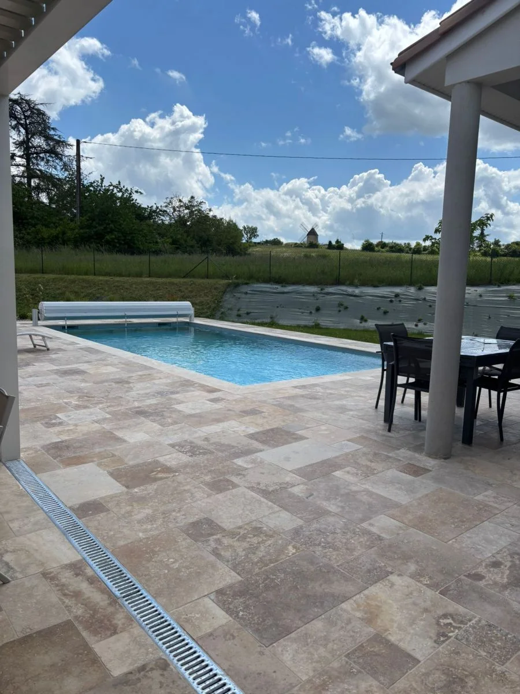
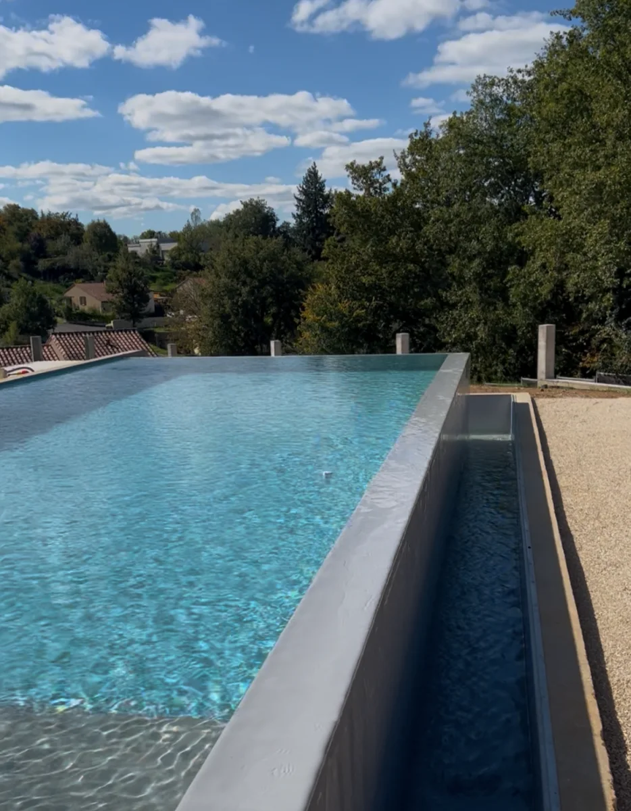

Intégrer la sécurité sans sacrifier le dessin.
Delpech présente plusieurs familles de dispositifs : volets immergés ou hors sol, barrières, abris et couvertures. Le bon choix dépend du bassin et de son usage.
Solution discrète qui peut préserver la continuité visuelle lorsqu’elle est intégrée dès la conception.
Une autre option de couverture et de sécurisation, visible sur certaines réalisations publiées par Delpech.
Une séparation physique de l’accès au bassin, à étudier en fonction de l’organisation du jardin.
Des solutions qui peuvent aussi influer sur le confort d’usage, la protection du bassin et son entretien.

Un volet immergé pour conserver une ligne très pure.
Dans sa réalisation miroir 10 × 4 publiée en janvier 2026, Delpech indique avoir retenu un volet immergé afin de préserver la continuité visuelle du bassin tout en intégrant la protection au projet.
La sécurité fait partie du projet, pas de la finition.
Plus le dispositif est anticipé, plus son intégration avec les plages, les margelles et la ligne du bassin peut être cohérente.
Échanger avec l’équipe